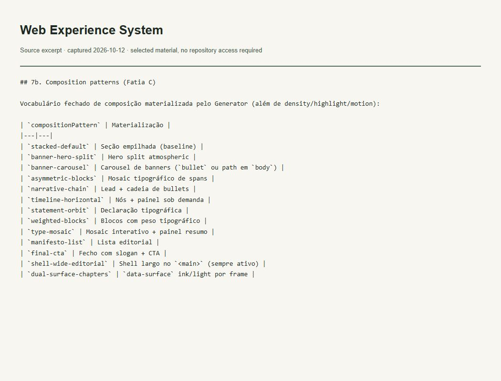

Evidence of the work
Generated editorial experiences
What this evidence demonstrates
Lists the deterministic compositions available to consumers, including this Folio.

Read accessible verbatim transcript
## 7b. Composition patterns (Fatia C) Vocabulário fechado de composição materializada pelo Generator (além de density/highlight/motion): | `compositionPattern` | Materialização | |---|---| | `stacked-default` | Seção empilhada (baseline) | | `banner-hero-split` | Hero split atmospheric | | `banner-carousel` | Carousel de banners (`bullet` ou path em `body`) | | `asymmetric-blocks` | Mosaic tipográfico de spans | | `narrative-chain` | Lead + cadeia de bullets | | `timeline-horizontal` | Nós + painel sob demanda | | `statement-orbit` | Declaração tipográfica | | `weighted-blocks` | Blocos com peso tipográfico | | `type-mosaic` | Mosaic interativo + painel resumo | | `manifesto-list` | Lista editorial | | `final-cta` | Fecho com slogan + CTA | | `shell-wide-editorial` | Shell largo no `<main>` (sempre ativo) | | `dual-surface-chapters` | `data-surface` ink/light por frame |
Context and limits
The composition contract does not certify the final consumer navigation or accessibility.
The image captures a locally rendered literal excerpt from the verified file. It is not a GitHub UI screenshot or a running-application screenshot. The excerpt retains its original language.